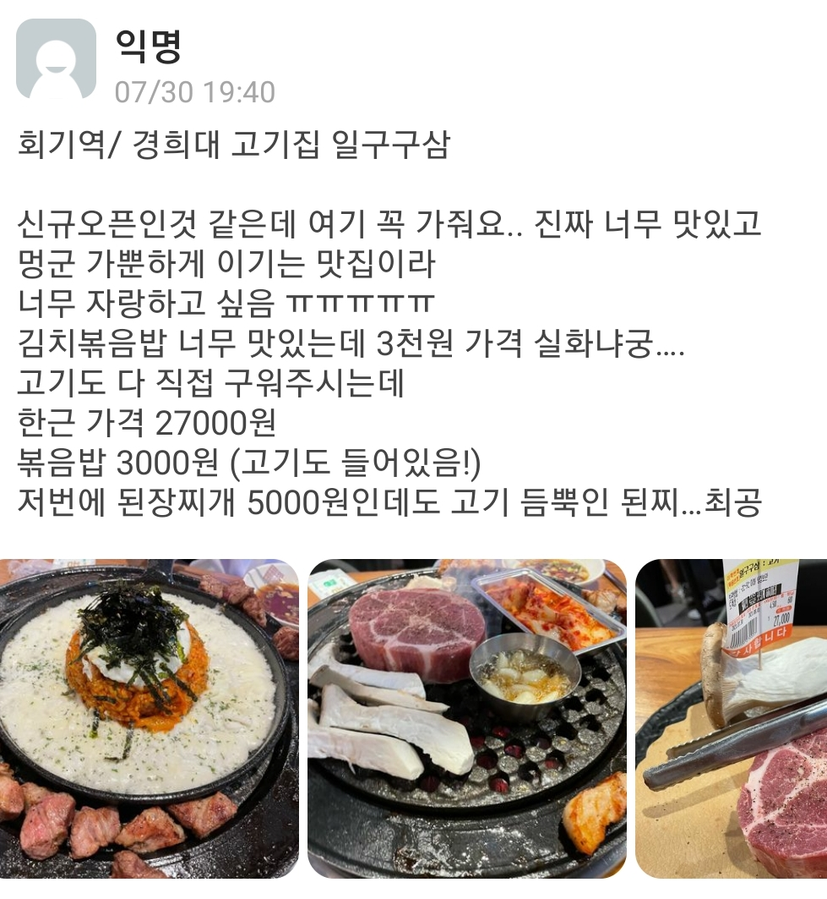

비트코인이 가치 있는 종목인 건 알겠지만, 뜬금없이 부동산 투자사에서 비트코인 매집을? 이라고 생각하신다면 한 번 짚고 넘어가면 좋을 만한 기사입니다.
이 기사는 비트코인을 많이 매집했다는 기사도 아니고 유명 투자은행 등의 기관도 아니기에 언뜻 보면 인사이트가 없어 보입니다.
하지만, 비트코인은 21세기의 디지털 부동산과 같습니다. 강남과 분당의 집값이 비싼 이유는 좋은 인프라 대비 공급(주택 수)이 한정되어 있고, 투자하면 오른다는 견고한 믿음 때문입니다.
비트코인도 마찬가지입니다. [출처] 비트코인, 이더리움 암호화폐 주요 이슈 및 뉴스체크|작성자 에임리치
